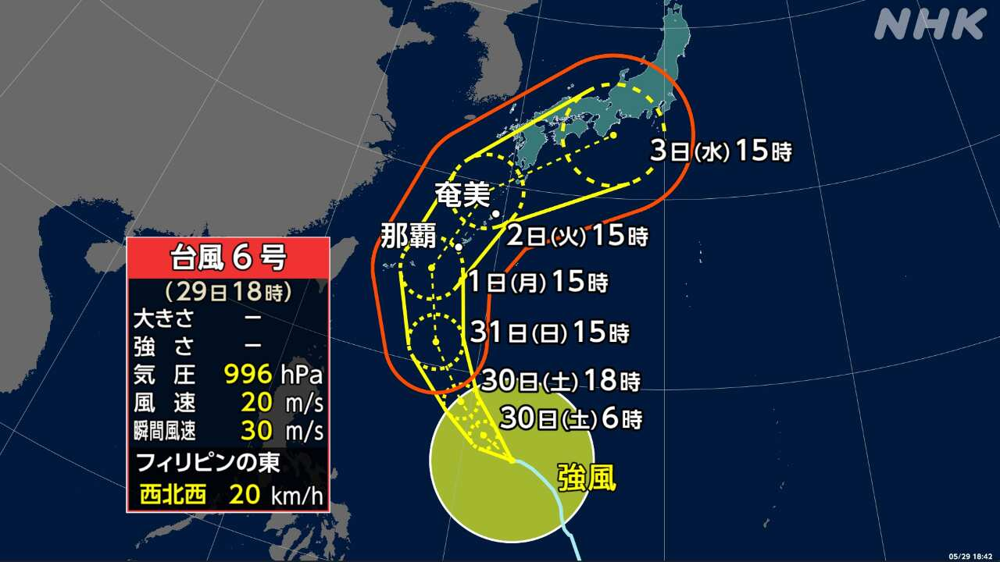
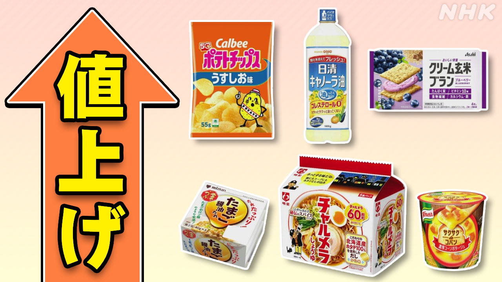

最新ニュース
1️⃣ 29日は暑くなった これから台風6号に気をつけて

29日は、多くの場所で暑くなりました。30℃以上になった所もありました。
東京の府中市は33.7℃、茨城県の土浦市は33.5℃でした。
30日や31日も暑くなりそうです。熱中症にならないように気をつけてください。
日本の南の海では、台風6号が北に進んでいます。
6月1日から2日ごろ、沖縄や奄美の近くに来る心配があります。沖縄や奄美では、とても強い風が吹いて、波が高くなりそうです。雨もたくさん降りそうです。九州や四国などでも、雨がたくさん降るかもしれません。
新しい天気の情報を調べるようにしてください。
2️⃣ 栃木県の事件 警察が容疑者の名前と写真を出した
5月14日、栃木県で69歳の女性が刺されて亡くなりました。
息子2人も、けがをしました。
この事件で、警察は高校生4人と夫婦2人を逮捕しました。警察は、48歳の益田和彦容疑者が高校生や夫婦に計画を伝えたと考えて、さがしています。そして29日、情報を集めるために、名前と写真を出しました。
警察によると、益田容疑者は、事件のあと、成田空港から飛行機に乗りました。東南アジアに行った可能性があります。
3️⃣ 6月に値段が上がる食べ物や飲み物は1000以上

食べ物や飲み物の値段がまた上がります。
帝国データバンクによると、6月は、1078の食べ物や飲み物の値段が上がります。この中の450は、香辛料やふりかけなど「調味料」です。
アメリカなどとイランの戦いが続いて、原油を運ぶことが難しくなっています。このため、原油からつくる袋やトレーなどの値段が上がって、食べ物や飲み物の値段も上がっています。
帝国データバンクは、イランでの戦いが長くなると、値段が上がる品物がもっと増えそうだと言っています。
4️⃣ 高市総理大臣とフィリピンのマルコス大統領が会って話をした
28日東京で、フィリピンのマルコス大統領と高市総理大臣が会って話をしました。
高市総理大臣は、インド洋や太平洋を自由で安全な場所にするために、日本とフィリピンがしっかり協力することが大切だと話しました。
そして、国の安全を守るための情報を交換する話し合いを始めることを決めました。
マルコス大統領は、国の安全と、海のルールを守るために、日本とフィリピンの協力が必要だと話しました。
そのほか、フィリピンがもっと多くの石油をためることができるように、日本が協力することも決めました。
- 〜以上
- 〜ところ
- 〜になる
- 〜そうだ
- 〜ならない
- 〜てください / 〜でください
- 〜ように
- 〜ている / 〜でいる
- 〜がある / 〜がいる
- 〜から
- 〜ごろ
- 〜ても / 〜でも
- 〜かもしれない / 〜かもしれません
- 〜や〜など
- 〜など
- 〜ようにする
- 〜ため(に)
- 〜ため
- 〜後 / 〜あと
- 〜によると
- 〜中
- 〜こと
- 〜ことができる
vebaev.github.io
Generated: 2026-05-29 15:38:29 UTC